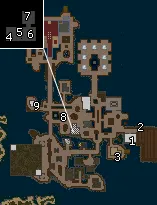
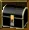

Trades: how they work
A trade is a skill like any other: you learn it by using it, it has a level from 1 to 100, and nothing stops you from having all of them. What sets trades apart is that the experience pool cannot be spent on them. Every level of a trade is made by hand, or handed to you by a quest or a Taskmaster.
The short advice, before the detail:
- On Valinor, take the Farming and Cooking trainers beside your weapon trainer. They hand you the tools for nothing and their tasks walk you through the first levels.
- Roast what you kill and fish when you want a rest. Both cost next to nothing and give food that adds 3 to 5 to your main attribute for half an hour.
- Pick one trade that suits your build (the table and the last section below) and leave the rest until you have gold to spare.
- If you mean to take a trade far, subscribe and use the Taskmasters. Players who level trades in earnest do it this way: the Taskmasters in Lotor's Summer Palace pay experience for crafting orders, the wiki calls them "the best way to level up those Crafting Skills", and the subscription they need adds 10% to all experience besides. They ask for level 10 in the trade.
Learning and raising a skill
- First use teaches it. By the wiki, a trade is added to your Skills window (
K) when you first attempt an item of level 0 in it. There is no trainer to pay and no limit to the number of skills. - Success pays twice. The Help Menu: when you "succeed at tradeskills" you gain experience towards your character's level "as well as with that Skill". So crafting also levels your character, slowly.
- Failure pays less and costs you. By the wiki, "successful attempts will yield more experience than the fails". What a failure takes depends on the trade: a failed mix destroys what was in the bowl (AE Guides quotes the game: "You destroy the mixture"), a failed planting loses the hole and the seed (the game's Farming guidebook), and the Help Menu says tools and gear lose health when you "fail a skill check". Since the patch of 7 May 2022 tools no longer wear down "for new players"; the note does not say until when.
- Each trade leans on one attribute, which raises your chance of success (the table further down). The wiki's list and the attribute column of the game's own skill table agree for every trade named here.
- A higher skill pays more per item. By the wiki, "as you level your skill you will receive more experience with each level".
- Skill is capped at 15 on Valinor (see the Valinor chapter) and your character at level 10. On the mainland the chart of Dragoneer's Den runs to skill 100.
How much experience a skill level takes, by Dragoneer's Den (the same chart serves every skill):
| Skill level | Total experience | Skill level | Total experience |
|---|---|---|---|
| 5 | 2,000 | 30 | 449,500 |
| 10 | 16,500 | 40 | 1,066,000 |
| 15 | 56,000 | 50 | 2,082,500 |
| 20 | 133,000 | 75 | 7,030,000 |
| 25 | 260,000 | 100 | 16,665,000 |
The first ten levels are a few thousand points each, which is why a quest that pays 20,000 into a trade lifts a beginner by five levels or more.
What the experience pool can and cannot do
The pool goes into combat skills. By the wiki, "not all skills can be epooled, such as Tradeskills". Dragoneer's Den marks skill by skill what takes pool: the weapon and magic skills, Leadership, First Aid and the five repair skills. None of the making or gathering skills is on that list: not Alchemy, not the three cooking skills, Brewing, the three farming skills, Fly-casting or Runecrafting.
So a trade is raised in four ways only: by making things, by quests that pay experience into it (each trade section in the next chapter names them), by Taskmasters, and, since the patch of 16 August 2025, by Scrolls of Experience ("no drop one time use scrolls that give skill xp"; the note does not say where they come from).
What raises a skill beyond its base
Bonus levels show in green beside the skill. They count for your chance of success, and by the wiki they also count for experience: with +5 from gear at skill 20 "you will earn the experience for level 25". The Help Menu says that bonuses to skills "do not count towards equipment requirements". Whether they let you make a recipe above your own level is not stated anywhere.
A patch of 21 March 2026 added a "cap for skill bonuses"; it does not say how high the cap is.
What a character below level 50 can get, with the figure from the game's item table unless said otherwise:
| Item | Bonus | Needs | Where from |
|---|---|---|---|
| Heavy Foraging Stick | +10 Foraging | Foraging 20 | Priced at 650 gold |
| Foraging Smock | +10 Foraging | Level 10 | Dropped by Dragoons (level 12) and others, by AE Database; a reward in the farming quests |
| Farming Almanac | +10 Planting while in your backpack (AE Database, Dragoneer's Den) | Nothing | Priced at 2,000 gold; a reward of "Growing Allies" |
| Farmer's Ring | +5 Harvesting, +5 Planting | Level 20 | A reward of "Old Debts" in the farming quests |
| Scythe of Ulthien | +20 Harvesting (AE Database and Dragoneer's Den say +10) | Level 20 by AE Database | Dropped by Orc Renegade Soldiers and Shamblers, by AE Database |
| Silver Spoon | +20 Mixing (AE Database and Dragoneer's Den say +10) | Level 20 by AE Database | The same two creatures |
| Chefs Cap | +20 Baking, +20 Roasting | Nothing | The same two creatures |
| Fishing Vest | +10 Fly-casting | Nothing | Dragoons (level 12); the third fishing quest |
| Waders | +10 Fly-casting | Level 30 | The fishing quests |
| Drinking Horn | +10 Brewing | Level 20 | Dropped by creatures of level 65 and up, so bought from players |
| Mystic Orb of Alchemy | A boost for 10 minutes, one use: +10 by AE Database, +30 by the wiki and Dragoneer's Den | Nothing | Silvest, "Quite Entranced" |
| Tome of Jandros | +10 Alchemy, +11 Int | Level 50, 35 Int, Alchemy 30 | Dropped by many creatures around level 50 |
Two foods add to trades as well: Cocochada (+5 Farming, +5 Fishing) and Lemon Ice (+5 Alchemy, +10 Runecrafting by the game's table, +5 by AE Database). Both are priced at 100,000 gold and sold, by AE Database, in New Krog City and New Josody City, so they are not for a beginner.
Skill gain, as we measured it
What the sources and our own play say about how a skill grows, rule by rule:
| Rule | Source |
|---|---|
| Every try gives experience, and a failed try gives half and loses material | Our own play, October 2026: 69 against 138 for a Saw, "You have lost some ingots" |
| One try gives more the higher your skill is: the same action paid in step with 12 + your skill level | Our own play, for Iron Smelting from level 0 to 22, Tanning 7 to 14, Spinning 0 to 7 |
| Each recipe has its own figure. For Iron Forging the game's recipe table holds it: experience of a try = figure x (12 + skill level) / 1,000 | Our own play, seven recipes, all that were tried. Not tested for the other trades |
| A recipe up to three levels below your skill still gave its full figure | Our own play. Nothing further below was tried |
| A skill needs 100 x (n - 1) x n x (n + 1) / 6 experience for level n: 2,000 for 5, 16,500 for 10, 56,000 for 15, 260,000 for 25, 2,082,500 for 50 | The game's own table |
| Gear that adds to a skill makes you earn as if you had that many levels more | The wiki's Skills page |
| Skill bonuses to forging and carpentry let you make harder recipes | Patch notes of 2021 |
| The better materials (see below) ask for the skill without bonuses | Dragoneer's Den |
| Server-wide bonus experience counts for trades too: 20% and 25% were seen | Our own play |
The ladders in the chapter on gear trades are our own reading of the recipe table: for each bracket, the recipe with the highest figure per piece of material. Nobody's tested advice was found: neither the wiki nor Dragoneer's Den nor AE Database says what to make to level a trade, they list recipes only. The figure is proven for Iron Forging and assumed for the rest.
Each skill leans on one attribute. Bonus orbs from gear count here, since these are passive checks (Help Menu).
| Chain | Gathering | Refining | Making |
|---|---|---|---|
| Blacksmithing | Mining: Strength | Iron Smelting: Intelligence | Iron Forging: Strength |
| Wood Working | Lumberjacking: Strength | Milling: Dexterity | Carpentry: Dexterity |
| Leathercrafting | Skinning: Dexterity | Tanning: Intelligence | Leatherworking: Dexterity |
| Tailoring | none of its own | Spinning, Weaving: Dexterity | Sewing: Dexterity |
| Jewelry | Mining: Strength | Iron Smelting: Intelligence | Jewelry Making: Dexterity |
The wiki's Tradeskills page and the game's skill table agree on all of these.
Better materials open at fixed levels of the gathering skill, by Dragoneer's Den, and the better two grades can only be worked next to an Obelisk or a Rune Spire, far from any town. A beginner works the first grade only.
| Gathering skill | 0 | 30 | 45 | 70 |
|---|---|---|---|---|
| Mining | Iron Ore | Thrallenite | Brimidian (red crystals) | Talenite (black crystals) |
| Lumberjacking | Logs | Fine Wood | Heartwood | Greater Heartwood |
| Skinning | Skinned Hide | Quality hide | Superior hide | Flawless hide |
| Worked at | anywhere, or the shop's station | the same | an Obelisk | a Rune Spire |
Three more things to know before you start:
- On Valinor every skill stops at 15, trades included. That is enough for each trainer's quest there.
- The ordinary tools do not wear out for a new player (patch notes of 2022).
- Magic tools add 10 or 20 to a skill and ask for skill 20 in it: Stonebiter Pick, Veldan's Hammer, Smelter's Gloves, Logging Axe, Two Bladed Saw, Carpentry Toolset, Magic Skinning Knife, Magic Leather Tools, Mystic Shears. They drop from creatures or are bought from players. Leave them until you are at 20.
Where to work
Forges and anvils are in blacksmith shops, tanning vats and leatherworking benches in leather shops (by the in-game guidebooks). Milling needs no station: you click the saw, then the logs. The in-game Carpentry guidebook says the same of carpentry itself (tools, then logs), while the wiki asks for a Carpentry Bench.
| Town | Blacksmith shop | Carpentry shop | Leather shop |
|---|---|---|---|
| Valinor | Kerry Thomas, 750,151, under the castle | Linus Houson, 750,150 | Tina Florence, 750,152; the tanning vat is under the castle too |
| Krog | none in Krog; Verdax in Maraket, 3070,4025 | Jarra, 3081,3785 | Gorn, 3162,3753 |
| Silvest | Eadwyn, 1116,1390 | Bunden, 1091,1356 | Vessik, 1087,1359, with the vats outside |
| Whisperdale | Adalar, 405,3448 | Quizlin, 381,3477 | Vornath, 392,3474; vats at 394,3479 |
Coordinates are the community map's. It marks no tailor's shop anywhere, so where the spinning wheels and looms stand is not known to us, except that Valinor's Tailoring Trainer (736,108) sends you to one of each.
Taskmasters
A Taskmaster is a person in Lotor's Summer Palace who sets you crafting tasks in one trade and pays in experience for that trade. The sources say little, and all of it is here.
What they need (the wiki's Skills page):
- A subscription (VIP). The Help Menu lists "Access to Lotor's crafting Taskmasters" among the perks.
- Level 10 in their trade.
- A patch note the wiki files at the end of 2022 adds: "Tradeskill Taskmasters now require Tides of Fate expansion enabled on the server". It speaks of the server, not of your account, and we could not tell whether you must own the expansion yourself. By Dragoneer's Den they are switched off on the Chaos server.
How a task goes (the wiki's Skills and VIP pages):
- Ask the Taskmaster for a task. He gives you a Taskmaster's Lockbox and names an item and a number.
- Make the items. Each one you make is put into the box as it is made.
- Bring the box back for the experience. "The more the Taskmaster asks for the more experience you get."
- A task can be beyond your skill, or dull. Double-click the box to destroy it and ask for another. There is no penalty named anywhere.
What they pay: "excellent experience" and "a hefty amount of experience towards that skill" are the only words any source has. No number is given anywhere, not for a task, not per item, not by skill level. The Help Menu counts Taskmaster tasks among the quests that can be repeated.
What they ask for: no source has a list. The patch notes show the lists being trimmed: bandages were taken off "the TM list" and building materials off the carpenter's (both in May 2021), and the foraging task asks for "a quantity of any seed, not one seed type" (January 2021).
Where they stand. The wiki lists nine in Lotor's Summer Palace and shows them on the picture below; the community map marks four of those:


The Taskmasters in Lotor's Summer PalaceWiki

A Taskmaster's LockboxWiki The Skills windowWiki
The Skills windowWiki| Taskmaster | By the map | Next to |
|---|---|---|
| Alchemy | 761,682 | Doyle Trobush's Magic Shop (756,677) |
| Brewing | 846,732 | Docale's Pub (846,728) |
| Carpentry | 856,716 | Tom Uslak's Carpenter Shop (852,710) |
| Farming | 862,705 | Garius' Farming Shop (860,713) |
| Tailoring, Blacksmithing, Leatherworking, Runecrafting, Jewelcrafting | Not marked | Our guess: by the shop of their trade, as the four above are |
The map marks a second set of seven (all but Runecrafting and Jewelcrafting) in Lopal on Scarab Island, around 380,2215. The patch notes name Lopal among the towns criminals are sent to, so that set is not for a new character.
There is no Taskmaster for Mixing, Baking, Roasting or Fly-casting. Cooking and fishing are raised by hand and by quests.
How to use them, as far as the sources carry (the plan is our reading):
- Bring the trade to 10 by hand first. That is 16,500 experience, the cheap part of any trade.
- Stand where the trade can be worked. The four marked Taskmasters are each beside the shop that sells the trade's supplies, and the palace has a bank at 840,680. With VIP you also own the stone that brings you back to the palace once an hour.
- Stock up before you ask. The box fills only with what you make after you have it, so have the materials in the bank and take tasks you can finish at once.
- Throw away what you cannot or will not make. Since larger orders pay more, a big order of something cheap is the one to keep.
- Run it during a Power Hour if you can (see below), and with a skill-raising tool in hand: by the wiki, bonus levels raise the experience you are paid for making things. Whether either touches the Taskmaster's own payment is not stated.
What else a subscription changes for a crafter
From the Help Menu and the wiki's VIP page. Prices are under The expansions.
| Perk | What it means for a trade |
|---|---|
| Taskmasters | See above. The one perk that is about trades |
| 10% more experience | "For all experience gained", shown in brackets in chat. It stacks with both kinds of Power Hour |
| Shared bank, 4 places | One more bank window, shared by all your characters on a server except those on Valinor. Crates can go in it, so one character can gather for another. No-drop items cannot pass through it |
| 4 more backpack places | 20 in place of 16. Materials fill bags fast |
| Monthly grab bag | A few items from the store, different each month, from the second month on. By Dragoneer's Den the bags of 2020 and 2021 held two to four Personal Power Hours among other things |
| Stone to Lotor's Summer Palace | Does not wear out, one use an hour. The palace has every kind of shop and the Taskmasters |
| Automatic looting alone | Saves the clicking when you hunt ingredients. It skips no-drop items |
| A house | Needs the Construction expansion as well. Crafted containers can stand in it |
If the subscription lapses, the extra backpack places and the shared bank close; what was in them is kept but cannot be reached until you subscribe again.
Power Hours
- A server Power Hour raises experience for everybody for one hour. Players start it at the altar in Teylan (Talazar's Revenge) for 5 million gold or items worth 500,000 by their tooltips; the quest "Mushroom Land" starts one as well, and the game masters run them at events. No source says by how much experience rises.
- A Personal Power Hour is a store item: 40 tokens by the wiki, 25% more experience for you for one hour. It stacks with a server Power Hour, and the subscription's 10% stacks with both.
- No source says in so many words that either applies to trade experience. The wiki says "all experience". Our reading is that they do; test it on a cheap batch before you spend an hour's materials.
The practical use: gather and prepare in ordinary time, and do the making itself during the hour.
All trades in one view
"Feeds on" is the gathering skill that supplies it. Attributes are from the wiki and the game's skill table.
| Trade | Skills and their attribute | What it makes | Feeds on | Expansion | For a beginner |
|---|---|---|---|---|---|
| Blacksmithing | Iron Forging (Str), Iron Smelting (Int) | Metal weapons and armor | Mining (Str) | None | See Trades: making gear |
| Wood Working | Carpentry (Dex), Milling (Dex) | Bows, arrows and bolts, shields, crates, tools for other trades | Lumberjacking (Str) | None | See Trades: making gear |
| Leathercrafting | Leatherworking (Dex), Tanning (Int) | Leather armor, bags | Skinning (Dex) | None | See Trades: making gear |
| Tailoring | Sewing (Dex), Spinning (Dex), Weaving (Dex) | Cloth armor, bandages | Planting (cotton), shearing | None | See Trades: making gear |
| Jewelry | Jewelry Making (Dex, by the game's table) | Rings and necklaces | Mining at 60 | Talazar's Revenge | See Trades: making gear |
| Alchemy | Alchemy (Int) | Healing, cure and repair potions | Hunting, Foraging | None; some high recipes need Sands of Creation or Talazar's Revenge | Yes for a mage. Others can buy potions |
| Cooking | Mixing (Dex), Baking (Int), Roasting (Int) | Food that adds to attributes for 30 minutes | Hunting, farming, fishing | None | Roast from the first day. Bake when you farm |
| Brewing | Brewing (Int) | Drinks that add to attributes for 60 minutes, on top of a food | Shops; farming for sugar | None | Cheap to try, every recipe is open at once |
| Farming | Foraging (Int), Planting (Int), Harvesting (Dex) | Seeds, crops, Bloodroot, flour, sugar, cotton | Itself | None | Take the Valinor trainer for the crate. Forage if you brew potions |
| Fishing | Fly-casting (Dex) | Fish to roast; later oysters, pearls, lobsters | Itself | None; oysters need Talazar's Revenge, lobsters Tides of Fate | Yes, as far as the Tackle Box |
| Runecrafting | Runecrafting (Int) | Crystals, runes, totems | Hunting and Mining for gems | Sands of Creation | Only if you own the expansion; then the first totems are cheap |
| First Aid | First Aid | Healing with bandages | Shops, Tailoring | None | You have it anyway. It takes pool |
| Identification | Identification | Entries in the Hunter's Handbook | Hunting | None | Do the Valinor quest, then when you feel like it |
Which trades to start, by build
Our reading, from the attributes above and from what each trade gives at low skill. Nobody we read gives advice by build. One caution for all of it: no source says how much the attribute matters to success, only that it does. A warrior has 5 Intelligence, and Alchemy, Baking, Roasting, Brewing, Foraging and Planting all lean on it.
| Build | Start with | Why |
|---|---|---|
| Warrior (Str, Con) | Roasting, Fishing, and one gear trade | Bear meat roasts into +5 Str and bears start at level 8. A Striped Thod is +4 Str. Fishing leans on Dexterity, not Intelligence, and gives the Tackle Box at Fly-casting 5. Brewing is worth a try later for Lotor's Pale Ale (+5 Str for an hour), since every brew is open from the first level |
| Archer (Dex, Str) | Fishing, Mixing and Baking, Carpentry | Fly-casting, Mixing and Carpentry all lean on Dexterity. Red Fleming is +4 Dex, a Cooked Crescent +6 Dex from flour, an egg and milk. Carpentry makes your arrows (see Trades: making gear) |
| Mage (Int, Con or Dex) | Alchemy with Foraging, then Baking or Brewing | Every one of them leans on Intelligence. You already cast Nature spells, and Alchemy needs one (Enchant Flora) for its main ingredient. Bluefin is +4 Int, Banana Bread +5 Int, Teylan Ale +7 Int at the price of 3 Con |
And for everybody: the Farming trainer on Valinor, for the 24-slot Storage Crate at the end.
What we could not find out about trades
- What a Taskmaster pays, in any number, and whether the payment grows with your skill level.
- Whether the "Tides of Fate expansion enabled on the server" that Taskmasters need is something your own account must have.
- Where the other five Taskmasters of Lotor's Summer Palace stand. The wiki's picture shows them; the map marks four.
- Whether a Power Hour, a Personal Power Hour and the subscription's 10% apply to trade experience and to a Taskmaster's payment. The sources say "all experience" and nothing more exact.
- By how much a server Power Hour raises experience.
- How much the attribute changes your chance of success, and what a point of skill bonus is worth.
- Whether bonus levels from gear let you make a recipe above your own skill level.
- How high the cap on skill bonuses of March 2026 is.
- How much less a failure pays than a success, and until what level "new players" keep their tools from wearing.
- Where Scrolls of Experience come from.
- Whether the Mystic Orb of Alchemy gives 10 or 30 levels, and whether the Silver Spoon and the Scythe of Ulthien give 10 or 20.